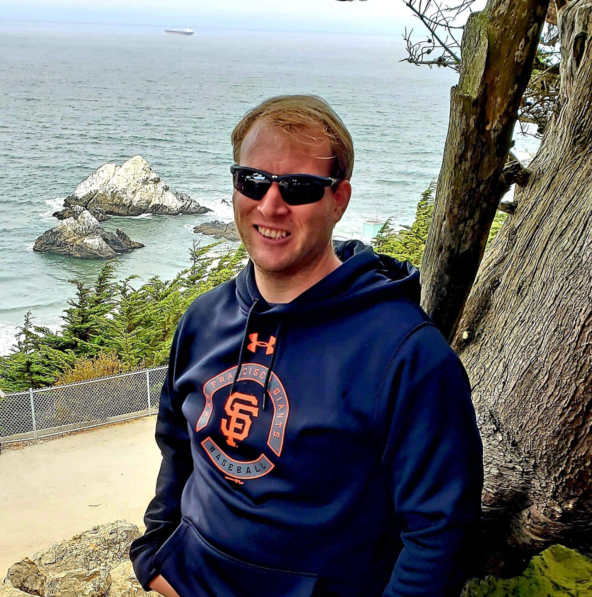
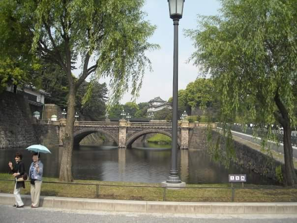

"Optimism is the faith that leads to achievement. Nothing can be done without hope and confidence. -Helen Keller"

Lands End Lookout, San Francisco, California, August, 2018
About Me
I am a motivated young man, defined through a lifetime of personal and professional experience. I live in St. Louis, Missouri and have obtained an extensive academic background, along with a diverse professional background. I strive to constantly improve each day mind, body, and soul everyday.

Imperial Palace, Tokyo, Japan May, 2008
Professional Background
I like to consider myself a jack-of-all-trades. First, I completed two Bachelor Degrees from the University of Missouri-Saint Louis. With my time at UMSL, I studied International Business at Obirin University Tokyo, Japan and at Kyoto-Sangyo University in Kyoto, Japan. Also, I participated in two business plans (accounting, finance, etc.). Also, I completed two internships with the American Red Cross-Metro West and the City of O'Fallon, Missouri. After college, I conducted private investigations and human resource work at Griffin Personnel Group and worked in Quality Assurance at Serco North America.
Skills
The skills I have accrued through my personal and professional experiences could be an asset for any employer! Among these skills are:
Multitasking
Reliability
Management/Leadership
Great Moral Compass
Programming Skills (Python 3.6, HTML 5, CSS, Javascript)
Quality Assurance (Auditing, Trend Analysis, Data Analysis, Testing and Writing Workflow Processes.
Project Management
Word Processing Skills (Microsoft Office (Word, Excel, Powerpoint) Mac (Pages, Numbers))
Hobbies
In my spare time, I enjoy exercising, particulary running and weight lifting. I love to challenge myself and want to do a half-marathon and full marathon soon! In addition, I am a world-traveler and my favorite city in the United States to visit is San Francisco. I love watching sports and I am an avid fan of the Saint Louis Blues, Saint Louis Cardinals, San Francisco Giants, and Green Bay Packers. I am very eclectic with my music taste and have seen Metallica, Paul McCartney, Garth Brooks, the Beach Boys, Journey, and Def Leppard in concert.
What I Want to do After LC101
My ultimate goal after LC101 is to find a job that can develop into a career. I believe my academic and professional backgrounds would translate into web development, database management, or software development.